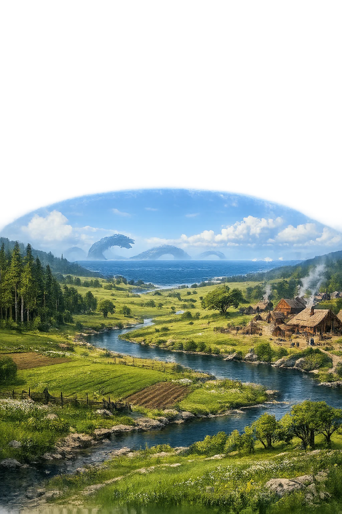

Stories of Miðgarðr
Miðgarðr is the middle enclosure — the world of women and men, fenced from Ymir's eyebrows after the giant's murder and ringed by the sea the Miðgarðsormr patrols. Everything human in the corpus happens inside it: the farm, the hall, the burial mound, and, at the world's end, its undoing.
When the sons of Borr slew the primeval giant Ymir, his body became the substance of everything. Óðinn, travelling in disguise to test the giant Vafþrúðnir, asks directly: from what was the earth and the sky made? The answer comes in two stanzas (Vafþrúðnismál 40–41): from Ymir's flesh the earth was fashioned, from his bones the mountains, from the ice-cold giant's skull the heavens, from his blood the sea. And then the stanza that gives the middle world its name: en ór brám jǫtuns brími drúpna, þeir er Miðgarð mǫnnum sǫmðu — 'from the giant's eyebrows the blithe gods made Miðgarðr for the sons of men.' Snorri retells the whole dismemberment in Gylfaginning 8, adding clouds from the brains and trees from the hair.
The fencing is the point. Of all the world made from the murdered giant, one part alone is deliberately enclosed — the strip of it humanity is given to live in, walled with eyebrows, guarded by gods. The violence at the origin of the world is never forgotten: it lingers in the landscape, in the sea, and in the giant's body that still supports human life. Civilization here is not a garden planted in innocence; it is a palisade built in a crime scene, and the corpus never lets the builders forget whose ground they stand on.
The enclosure was not made for gods but for the fated. Völuspá 17–18 tells of the time when the Æsir found on the shore two trees, weak and rootless, named Askr and Embla — ash and elm — and lifted them into the shape of a man and a woman: Óðinn gave them breath and spirit, Hœnir gave them understanding, Lóðurr gave blood, colour, and the working senses. With that gift the race began that will people Miðgarðr and die in it until the world's last day; Snorri repeats the making in Gylfaginning 9. Three times in the poem's architecture the seeress returns to this shore — the found trees, the first warmth, the first grief — as if the whole future of the enclosure were foretold in the moment of its first inhabitants.
Ask and Embla arrive 'fateless' and are made fated; the fence of Miðgarðr is thus from the very first a boundary not only against giants but against meaninglessness. Inside it, human beings are the creatures who know they will die; the enclosure holds that knowledge the way a wall holds weather — at a cost that is permanent and, the poem hints, worth paying.
The middle world's fence of ocean has a living tenant. In Hymiskviða, Þórr goes fishing with the giant Hymir, rows far out into the girdling sea, and baits his hook with the head of the giant's best ox — the ox is named in the poem, Himinhrjóðr, 'heaven-wardener' — and what takes the bait is the Miðgarðsormr itself. The serpent's neck arches over the gunwale, venom dripping, eyes glaring up at the thunder-god; Þórr grips his hammer, Hymir stares in terror and cuts the line, and the world-serpent sinks back into the deep. Snorri retells the expedition in Gylfaginning, and the Altuna runestone in Sweden carves the scene in stone: Þórr's foot braced through the boat's bottom as he swings the hammer at the serpent's head.
The encounter is the defining image of Miðgarðr's fragility. The world of men is ringed by a creature that could crush it, and the ring is policed, not settled — held at bay only by the vigilance of the one god whose whole job is the border. The catch is always the one that gets away; the corpus makes clear that this reprieve lasts exactly until the last day, when the serpent comes ashore for good.
Every enclosure the corpus builds, Ragnarǫk unbuilds. Gylfaginning 51 marshals the end: the Miðgarðsormr heaves itself out of the sea and onto the land, blows poison across sky and sea until the whole air burns; the wolf swallows the sun; Surtr's fire runs loose across the earth. The guardians fall with what they guarded: Þórr kills the serpent but staggers nine steps back and dies of its venom. Völuspá closes the geography in two lines that haunted the poets who quoted them ever after — sól tér sortna, sígr fold í mar, 'the sun turns black, earth sinks into the sea' (st. 57). The fence of eyebrows, the ocean wall, the rainbow bridge: all of it was a tenancy, and the lease is the world's age.
Miðgarðr's story ends where every fence ends — at the moment the thing it kept out is revealed to be the thing that held it up. The enclosure was never the world; it was the world's middle, borrowed from a giant's corpse and loaned to a fated race. Ragnarǫk is the reading of the terms.
The domain of Miðgarðr
Miðgarðr — the 'middle enclosure' — is the world of human beings, fenced from Ymir's eyebrows and ringed by the sea the Miðgarðsormr patrols. Between Ásgarðr of the Æsir and the wilderness of the giants, it is the measurable, farmable, mortal middle where every human story in the corpus takes place.
Miðgarðr is the fenced ring of human habitation carved from Ymir's flesh and set between gods and giants.
The gods made the earth from the giant's flesh, mountains from his bones, seas from his blood, and sky from his skull.
The world serpent encircles all land in the surrounding ocean, held at bay by Þórr's vigilance.
A garðr is a bounded enclosure; Miðgarðr is the protected middle world surrounded by wilderness and sea.
From the original script to the living URL
ᛘᛁᚦᚴᛅᚱᚦᛁ
The name in its original Norse form. Miðgarðr (ᛘᛁᚦᚴᛅᚱᚦᛁ) is attested in the source tradition — “Middle enclosure (from mið + garðr)”. Its original diacritics and script distinctions carry the full phonetic and orthographic weight of the source tradition.
midgardr
Reduced to plain midgardr, the name loses everything that made it specific: original diacritics and script distinctions. What remains is an ASCII string that machines can parse but that no longer speaks with its original voice.
Miðgarðr
The Unicode restoration recovers what ASCII flattened. Miðgarðr restores original diacritics and script distinctions, returning the name to its original written dignity. The domain encodes to Punycode, but the browser displays the truth.
Miðgarðr.com → xn--migarr-qwad.com
The non-ASCII characters in Miðgarðr are encoded while the ASCII remains visible. To the DNS, it is Punycode. To humanity, it is Miðgarðr.
Owned, ideal, and ASCII forms of Miðgarðr
Miðgarðr
Restores ᛘᛁᚦᚴᛅᚱᚦᛁ. The live temple domain — miðgarðr.com.
midgardr
Flattens ᛘᛁᚦᚴᛅᚱᚦᛁ. The plain ASCII fallback — what DNS and legacy systems see.
How Miðgarðr was spoken
How Miðgarðr travels from ancient script to the modern URL
Old Norse Miðgarðr; from miðr “middle" + garðr “enclosure, yard"; the world of humans.
Middle Enclosure (Earth)
The Unicode restoration Miðgarðr uses registrable Thorn and vowel accents; the runic form is not used because runic TLD support is impractical.
A name like Miðgarðr is a map folded into a word. Garðr is the ancestor of English 'yard' and of the -yard in orchard: a bounded space, fenced and worked. To say 'middle-enclosure' is to hold, in one compound, an entire theory of civilization — that the human world is not the whole of reality, only its fenced middle, and that everything outside the fence is older, larger, and waiting. The theory was literal in the Viking age: farms were garðar, the wilderness was útgarðar, and the law itself was the space inside the fence.
Enter Extended Lore